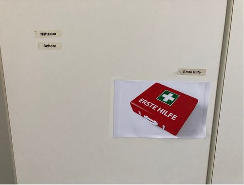
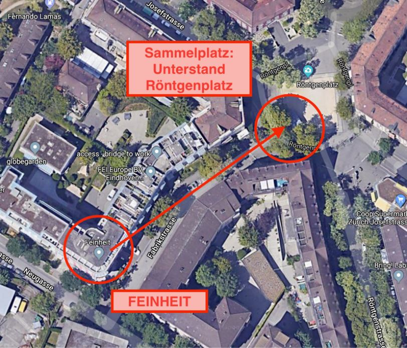

Sicherheit
Notrufnummern
Notfall: 144 Polizei: 117 Feuerwehr: 118
Erste-Hilfe
Das Erste-Hilfe-Material findest du in der Küche, im Schrank links neben dem Getränkekühlschrank:

Notfall Sammelplatz
In einem Notfall (z.B. Gebäudebrand) müssen sich alle Mitarbeitenden am Sammelplatz einfinden. Der Feinheit-Sammelplatz befindet sich beim Unterstand Röntgenplatz.

Spielregeln im Umgang mit Drogen, Schutz der persönlichen Integrität und psychosozialer Gesundheit
Umgang mit Drogen, Alkohol und Medikamenten
Während der Arbeitszeit wird Alkohol- und Drogenkonsum nicht toleriert.
Umgang mit Mobbing, Diskriminierung, Gewalt und sexueller Belästigung
Mobbing, Diskriminierung, Gewalt, sexuelle Belästigung und einige Formen der technischen Personenüberwachung verletzen die Würde und den Selbstwert des Menschen. Solche Verletzungen beeinträchtigen das Wohlbefinden und die Gesundheit der Betroffenen, aber auch die Zusammenarbeit im Betrieb. Sie werden deshalb in unserem Unternehmen nicht toleriert.
Wir wollen, dass sich jede und jeder bei Feinheit respektiert und geschätzt fühlt und wir einander mit Achtung und Wertschätzung begegnen. Alle Menschen sollen mit ihren Stärken und Schwächen ernst genommen werden. Es ist uns ein Anliegen, die persönliche Integrität unserer Mitarbeitenden zu schützen. Dazu müssen wir alle unseren Beitrag leisten. Wir danken allen für die aktive Mithilfe zur Schaffung eines guten Arbeitsklimas und eines wertschätzenden Umgangs miteinander.
Problematisches und inakzeptables Verhalten
Verletzungen der persönlichen Integrität beeinträchtigen das Wohlbefinden und gefährden die Gesundheit der Betroffenen sowie die Zusammenarbeit im Betrieb. Sie werden deshalb bei Feinheit nicht toleriert. Dies gilt insbesondere für:
- Belästigung / Mobbing / psychische Gewalt / (Diese Begriffe werden oft synonym für soziale Ausgrenzung und Schikane verwendet)
- Sexuelle Belästigung
- Diskriminierung
- Nötigung zur Konsumation von alkoholischen Getränken, Nikotin oder anderen Schadstoffen im Rahmen der beruflichen Tätigkeit
- Technische Überwachung des Verhaltens der Arbeitnehmenden
Feinheit unternimmt sein Möglichstes, um die Mitarbeitenden vor physischer und verbaler Gewalt von aussen (Kund/innen) zu schützen.
Was ist gemeint mit (Definitionen)
Mobbing / Belästigung / Psychische Gewalt
Mobbing (man spricht auch von Belästigung oder von psychischer Gewalt) bedeutet mehrfach wiederholtes, unangemessenes Verhalten gegenüber einem Arbeitnehmer oder einer Gruppe von Arbeitnehmern mit dem Ziel, die belästigte Person zu schikanieren, zu demütigen, zu bedrohen oder ihre Würde zu unterminieren. Das Mobbingverhalten, das meist innerhalb einer Organisation auftritt, kann sowohl verbale als auch körperliche Angriffe beinhalten, ebenso aber auch subtilere Formen wie soziale Ausgrenzung. Mobbinghandlungen können beispielsweise Angriffe sein auf
- die Möglichkeit sich mitzuteilen oder Information zu erhalten: Nicht ausreden lassen, unterbrechen, anschreien, Informationen vorenthalten.
- die sozialen Beziehungen: allgemeine Kontaktverweigerung, ignorieren, ausgrenzen, isolieren
- das soziale Ansehen: lächerlich machen, Gerüchte streuen, Sticheleien, Beleidigungen, abschätzige Bemerkungen
- die Qualität der Berufs- und Lebenssituation: schikanöse und erniedrigende Arbeiten zuweisen, ungerechtfertigte Kritik, Entziehen von wichtigen Aufgaben
- auf die Gesundheit: Androhung von körperlicher Gewalt, Tätlichkeiten
Sexuelle Belästigung
Als sexuelle Belästigung am Arbeitsplatz gilt jedes Verhalten mit sexuellem Bezug, das von einer Seite unerwünscht ist und eine Person in ihrer Würde verletzt.
Darunter fallen insbesondere:
- sexuelle Anspielungen oder abwertende Bemerkungen über das Äussere von Mitarbeiterinnen und Mitarbeitern
- sexistische Bemerkungen und Witze über sexuelle Merkmale, sexuelles Verhalten und die sexuelle Orientierung von einzelnen Frauen und Männern
- zeigen und verbreiten von pornografischem Material
- unerwünschte Einladungen mit sexueller Absicht
- unerwünschte Körperkontakte
- Verfolgen von Mitarbeiterinnen und Mitarbeitern innerhalb oder ausserhalb des Betriebs.
- Annäherungsversuche, die mit Versprechen von Vorteilen oder Androhen von Nachteilen einhergehen
- sexuelle Übergriffe, Nötigung oder Vergewaltigung
Diskriminierung
Als Diskriminierung gilt jede Äusserung oder Handlung, die darauf abzielt, eine Person aufgrund ihrer Herkunft, Rasse, des Geschlechts, des Alters, der Sprache, der sozialen Stellung, der Lebensform, der religiösen, weltanschaulichen oder politischen Überzeugung oder wegen einer körperlichen, geistigen oder psychischen Behinderung ohne sachlichen Grund zu benachteiligen, ungleich zu behandeln oder in ihrem Wert herabzusetzen.
Gewalt
Die Gewalt «von aussen» beinhaltet in der Regel physische Gewalt sowie verbale Beleidigungen, Bedrohungen, die von Außenstehenden, (z.B. Kunden) gegenüber Personen bei der Arbeit ausgesprochen bzw. ausgeübt werden, wobei Gesundheit, Sicherheit oder Wohlbefinden der Beschäftigten gefährdet wird. Die Gewalt kann auch einen rassistischen oder sexuellen Aspekt haben.
Aggressive oder gewalttätige Handlungen nehmen folgende Formen an:
- unhöfliches Verhalten – mangelnder Respekt gegenüber anderen,
- körperliche oder verbale Gewalt – Absicht, jemanden zu verletzen,
- Überfälle, Übergriffe Dritter – Absicht, jemanden zu schädigen.
- Technische Personenüberwachung
- Mit technischen Überwachungs- und Kontrollsystemen sind hier Systeme gemeint, die Arbeitstätigkeiten von Arbeitnehmenden erfassen und allenfalls aufzeichnen. Während die Überwachung leistungs- und qualitätsrelevanter Aspekte der Arbeitnehmenden zulässig ist, ist die Überwachung ihres persönlichen Verhaltens unzulässig.
- Beispiele für Letzteres sind das technische Überwachen oder Aufzeichnen von Gesprächen, Bildaufnahmen, Positionsortungen, Webzugriffen, Schriftverkehr, Dokumentkopien etc.
Arbeitgeber
Als Arbeitgeber ist Feinheit zum Schutz der persönlichen Integrität gesetzlich (Arbeitsgesetz: Art. 6; Obligationenrecht: Art. 328) verpflichtet.
Feinheit setzt sich ein für die Einhaltung des Schutzes der persönlichen Integrität und duldet deshalb keinerlei Belästigung, Gewalt oder Diskriminierung, weder durch Mitarbeitende noch durch Kunden oder Geschäftspartner.
Feinheit setzt sich für eine offene Kommunikation und einen fairen Umgang miteinander ein. Ziel ist eine Betriebskultur, in der konstruktiv mit auftretenden Differenzen umgegangen wird.
Vorgehen bei auftretenden Problemen
Informelles, vertrauliches Vorgehen
Wer zunächst vertraulich mit einer Person über das Erlebte sprechen will, kann sich an die Rolle Gesundheitsminister*in wenden. Die Mitarbeitenden der Vertrauensstelle unterliegen der Schweigepflicht.
Vertrauliche Beratung
- Interne Vertrauensstelle: Rolle Gesundheitsminister*in
- Externe Vertrauensstellen: Opferhilfe, Nottelefon, Spezialisierte Beratungsstellen: z.B. für Mobbing, für Gleichstellung
Burnout vorbeugen
- Respektiere deine Bedürfnisse (Schlaf, Essen, Bewegung etc.) und sorge für ausreichend Erholungsmöglichkeiten.
- Trete für einmal kürzer und reduziere dein Tempo.
- Überprüfe deine eigenen Ansprüche auf Angemessenheit und reduziere diese gegebenenfalls.
- Wenn die Arbeitslast zu gross wird, setze in Absprache mit deinem LeadLink Prioritäten oder delegiere nach Möglichkeit einige Aufgaben.
- Suche Unterstützung bei deinem Lead Link, Kolleginnen und Kollegen oder bei der Rolle Gesundheitsminister*in.
Wenn du mit den vorgeschlagenen Massnahmen nicht weiterkommst, nimm professionelle medizinische oder psychologische Hilfe in Anspruch. Erschöpfungszustände können auch körperliche Ursachen haben, die durch eine ärztliche Untersuchung geklärt werden können.